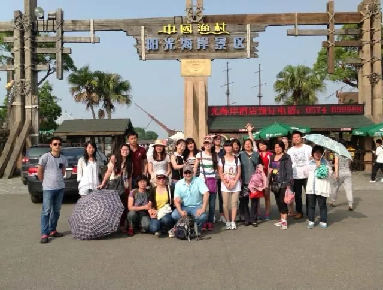
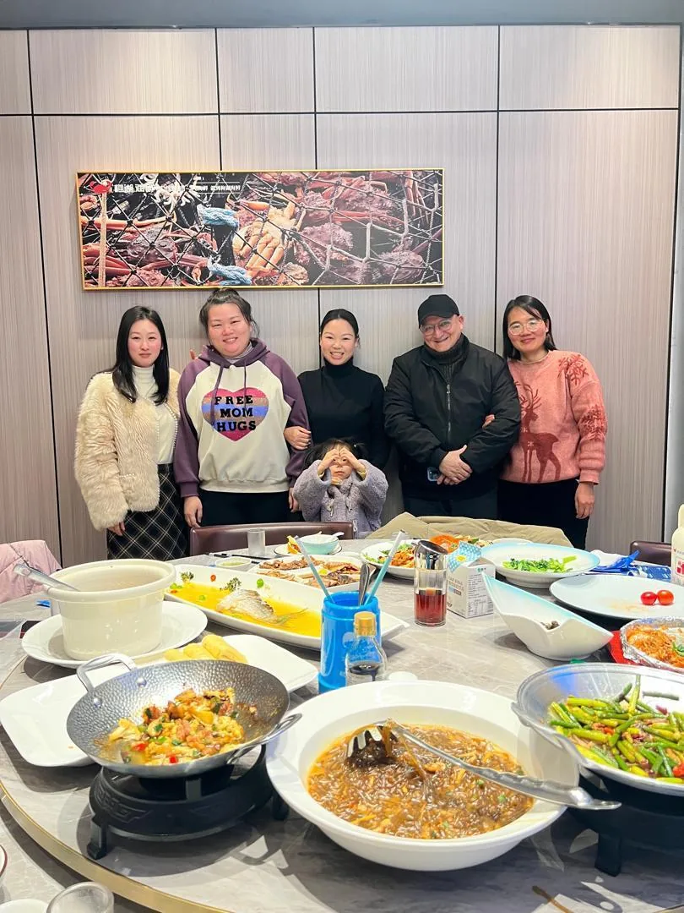
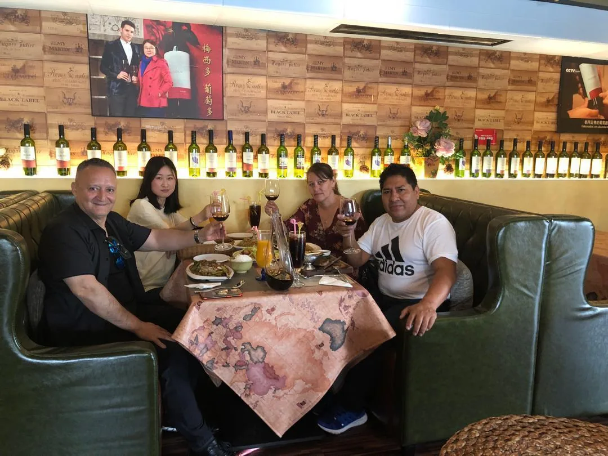
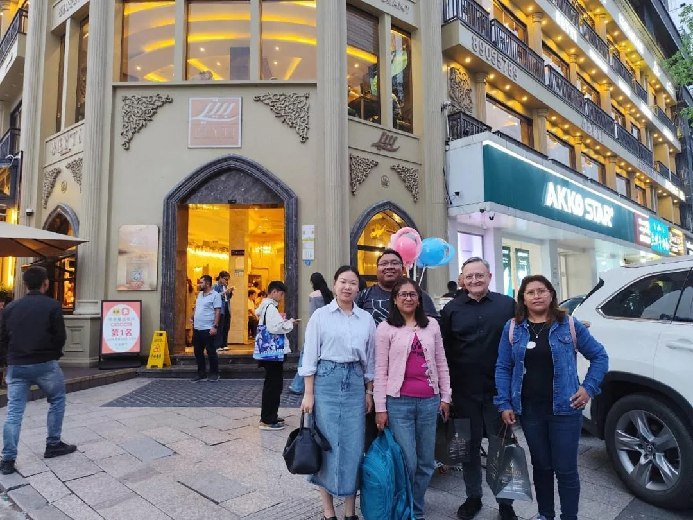
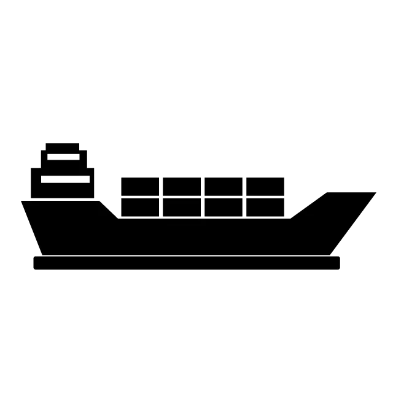
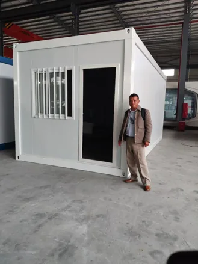
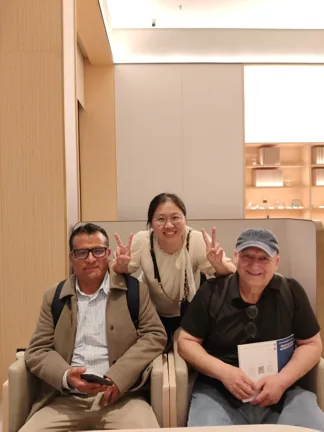
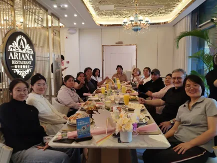
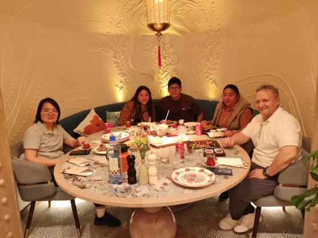
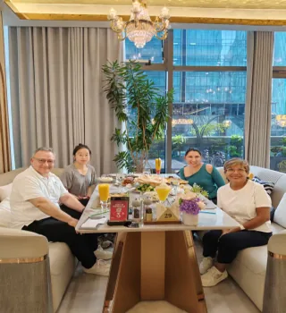

20 años en Yiwu
Presencia permanente en el centro mayorista más importante de China.
Simplificamos todo el proceso de importación desde China para emprendedores y comerciantes de América Latina y Centroamérica. Le ayudamos con búsqueda de proveedores, consolidación de mercancías y logística de exportación directa desde fábricas hasta su país.
Presencia permanente en el centro mayorista más importante de China.
Equipo con atención en español y portugués para negociar con proveedores locales.
Rutas marítimas y aéreas hacia América Latina, Centroamérica y otros destinos.
Yiwu Cambridge es una compañía creada para apoyar a importadores, emprendedores y comerciantes que desean adquirir mercancía directamente en China. Contamos con más de 20 años de presencia permanente en Yiwu y un equipo interno con traductores nativos de español y portugués, especializados en el mercado mayorista.
Brindamos seguimiento integral desde la búsqueda de proveedores, supervisión de fabricación, recepción de mercancía, inspección de calidad, etiquetado, carga de contenedores, trámites de exportación y envío hacia países de Latinoamérica, Centroamérica o el destino donde se encuentre su negocio.
Contamos con un equipo preparado para acompañarle en cada etapa del proceso de compra, verificación y exportación desde China.

Infraestructura completa de principio a fin
Búsqueda y negociación directa con fábricas sin intermediarios, comparación de precios y verificación de proveedores confiables.
Recepción de mercancía en nuestras instalaciones, inspección visual y dimensional, revisión de empaques y etiquetado individual por cliente.
Agrupamos pedidos pequeños de varias fábricas en un solo contenedor para reducir costos de envío cuando no se requiere un contenedor completo.
Gestionamos rutas hacia América Latina y Centroamérica, junto con facturas, packing list y documentos necesarios para la exportación.
Artículos listos para envío inmediato, sin espera de fabricación, ideales para tiendas pequeñas y nuevos emprendedores.
Solicite su cotización hoy mismo y reciba orientación en español.
Solicitar cotizaciónProceso claro, seguro y acompañado
Envíenos fotos, descripción, cantidades y país de destino. Abone el depósito reembolsable de 50 USD para recibir una cotización formal.
Nuestro equipo local visita fábricas y mayoristas de Yiwu para obtener precios directos de fábrica competitivos.
Supervisamos la producción e inspeccionamos cada lote al llegar a nuestra bodega para comprobar calidad, medidas y empaques.
Clasificamos y etiquetamos su mercancía, gestionamos los trámites aduaneros en China y preparamos el contenedor o envío aéreo.
Recibirá la documentación de exportación para realizar el desaduanaje en su país y empezar a vender sus productos.
Le acompañamos desde la búsqueda del producto hasta la preparación de su envío.
Asignarme un agenteRecibimos mercancía de diferentes proveedores, verificamos empaques, cantidades y condiciones generales. También organizamos productos por cliente para consolidar cargas y preparar envíos marítimos o aéreos.



El Mercado de Futian, en Yiwu, China, comenzó en 1982 como pequeños puestos callejeros. Tras años de crecimiento, reajustes y construcciones, se convirtió en el mercado de artículos de mayoreo más grande del mundo. Cuenta con aproximadamente 8 millones de metros cuadrados, más de 80.000 puestos de venta y más de 2.1 millones de artículos en exhibición.
Futian ha sido reconocido por las Naciones Unidas y el Banco Mundial como el mercado de artículos más grande del mundo, convirtiéndose en un punto clave para importadores y revendedores de América Latina.
Acompañamiento directo en Yiwu para revisar productos, proveedores y oportunidades

Coordinamos envíos marítimos y aéreos desde China hacia Latinoamérica y Centroamérica


Algunos clientes y aliados satisfechos





Le ayudamos a hacer crecer su negocio con asistencia directa en China
Le asignaremos un agente personal para realizar seguimiento a sus solicitudes y pedidos de la A a la Z. Nuestro equipo será sus manos y ojos en China para construir un proceso comercial seguro, claro y rentable.